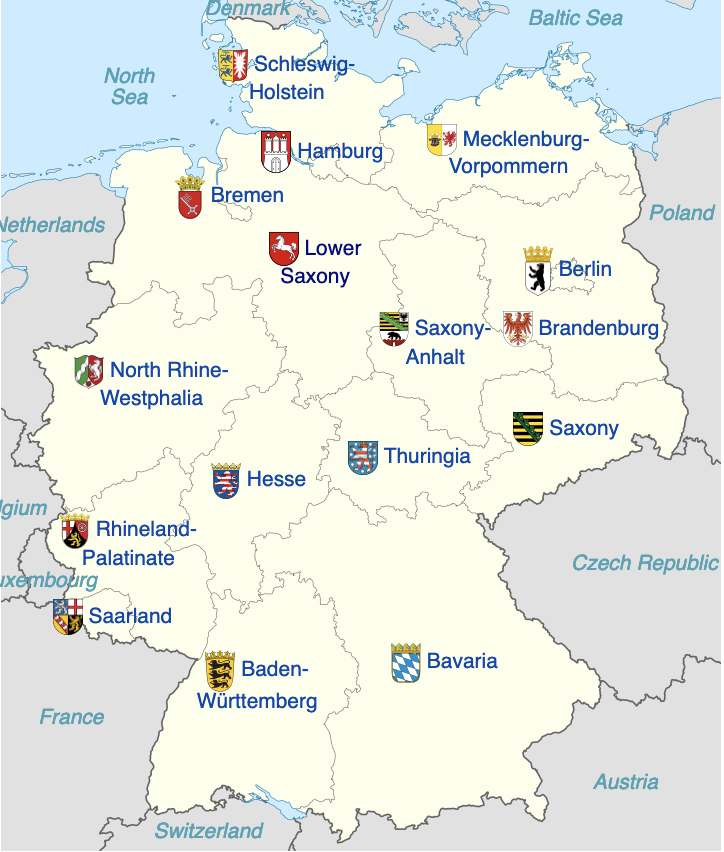
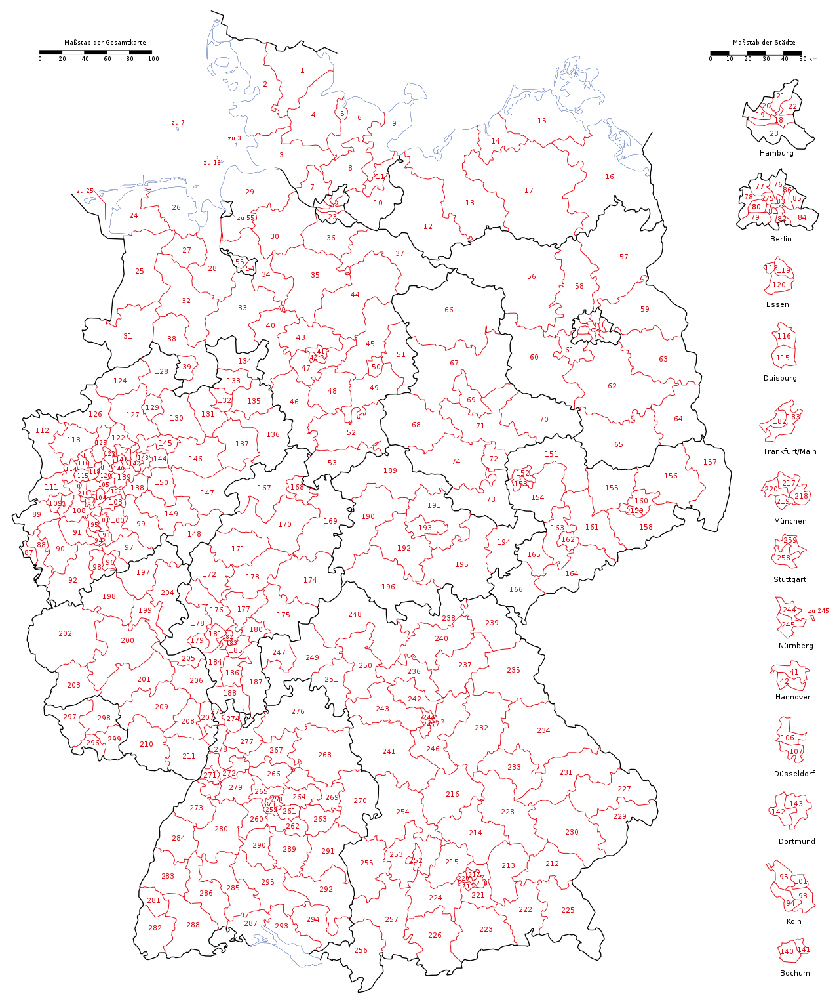

Politics in Germany
A (relitavely) short introduction
Politics in Germany may seem complicated for some— especially those who are used to a two-party system, and simple for others. Germany is a democratic, federal Republic, with two main legislative bodies. The Bundestag, which is directly elected by the people and is the primary parliamentary body; and the Bundesrat which only has say in a few issues and is not elected by the people.

To elect the Bundestag, Germany uses an electoral system where each political party recieves seats proportionally to how many votes they get. This leads to a multi-party parliament where since 1957, no single party (or electoral alliance) has controlled more than 50% of seats. As a consequence, governments require multiple participating parties to form.
Due to the fact that Germany is a federal nation, it has sixteen very powerful states ("Bundesländer" in German). In similar fashion to the fifty US states, each has its own state parliament which is elected every 5 years.
[right: map of German States (c) NordNordWest 2008]
{kind=link}
Election System
The German election system is quite complicated. Whilst the resulting Bundestag will always accurately reflect how many votes each party got, the path to get to that point is quite confusing.
 The Bundestag is supposed to have a 598 seats. Half of the seats are elected through 299 geographic districts, these are called "Wahlkreise". The Wahlkreise are drawn so that each has roughly 250k inhabitants, this is why they are more densely located near large population centres. All parties get to run candidates in every Wahlkreis. The party with the largest voteshare in a Wahlkreis wins said Wahlkreis, and consequently also a seat in the Bundestag. This system is similar to that used to elect the UK Parliament or US House. Now, this may not result in fully proprtional results. One party may only have recieved 50% of the vote but could have won all 299 Wahlkreise, this is where the rest of the 299 seats come into play. These seats are there to compensate for parties which did not win enough or any Wahlkreise. Typically the FDP is the kind of party which does not win any Wahlkreise but still obtain a significant amount of votes. [left: map of 2021 Wahlkreise (c) Furfur 2021]
{kind=link}
This is why Germans get to vote twice in an Election. Once for the candidate from their Wahlkreis, the so called "Erststimme (First Vote)", and once for the party which they actually support, the Zweitstimme (Second Vote).
In Germany this system is made more complicated because there also exist additional seats for the cases where even after all 598 seats are assigned, the Bundestag is still not proportional. This means that the amount of seats in the Bundestag nearly always changes from election to election.
Addtionally parties have to pass a 5% minimum vote threshold to be represented in parliament
Here a great video to help explain the system in more detail:
Political Parties and Alliances
For most of the post-war years, only three to four political parties were represented in the Bundestag. Similar to most Western democracies, there was a large liberal and leftist party; a large conservative party and a minor centrist and market orientated party. Then after German reunification in 1991 the number of parties grew significantly; whilst the share of votes for the tradtional parties decreased as party loyalty became less of a defining factor in Politics. In fact, currently the largest party represented in the Bundestag, the SPD, recieved only 25.7% of the vote, when only a few decades ago the largest party would consistently recieve over 40% of the vote. This shows the extent of political fragmentation in modern German politics.
Represented in the Bundestag
Parties which have seats in the Bundestag, sorted in descending order from largest to smallest:
Sozialdemokratische Partei Deutschlands (SPD)
Social Democratic Party of GermanyFounding: May 27, 1875
Political position: Centre-left, liberal
Seats in Bundestag: 206/736
The SPD is Germany's oldest Party, it was formed in 1875 after a merge of multiple marxist and worker's-interest parties. It has existed through three very different German states, at first the German Reich, then the Weimar Republic and consequently the Third Reich as well as the current Republic of Germany. Ever since the late 19th century it was the dominant leftist political force in German politics.
The party has its roots in the early marxist movements of the 19th century, and up until the 1950s they were officially a marxist party. However they decided to get rid of the label as it was seen as outdated and a disadvantage. The Party itself stands for an expanded welfare system, a reduction of social and economic inequalities as well as a pro-european outlook. It is very moderate in comparison to its past self. The SPD has participated in multiple governments acorss the past two centuries, along with parties such as the Greens, the FDP and the CDU.
Voter's of the SPD are mainly found under the elderly population (60+). SPD voters are also generally Protestant or non religious, they are either working class or pensioners and generally are not very wealthy. Most of its support is concentrated in the Ruhr area, the former industrial heartland of Germany; the city states such as Hamburg and Bremen; the industrial areas around Hannover and Wolfsburg, and in the northern parts of former East-Germany.
Electoral Alliance: CDU/CSU
Seats controlled by both CDU and CSU: 197/736
The CDU/CSU Electoral Alliance is an alliance of two parties, they are sister parties. The CDU runs in all of Germany except Bavaria and the CSU only runs in Bavaria. In the Bundestag they act as one party. This is why for most purpouses the two parties are combined into one entity.
Christlich Demokratische Union Deutschlands (CDU)
Christian Democratic Union of GermanyFounding: June 26, 1945
Political position: Centre-right, conservative
Seats in Bundestag: 152/736
The CDU was the dominant party in German politics for most of the post-war era. It has lead 19/26 of the post-war governments, and up until late 2021 there were many people, who had grown up knowing no other government except that of the CDU and Chancellor Merkel. The CDU is seen by many as a party which stands for stability and pragmatic politics, neither too much to the right or too much to the left.
Even though the name implies a heavy emphasis on Christianity, the CDU does not advocate radical religious doctrine and does not seek to enforce a certain religion upon the people. In fact, it was created as a party which would bridge divides between Protestantism and Catholicism, which up until the Second World War were very much opposed to each other politically. The CDU is a generally conservative party which supports a small welfare state and believes in the power of the free market. However, under Merkel the party has become more moderate and has adopted more liberal social policies, most notably during the 2015 Migration Crisis where Merkel advocated for open borders and refuge for all who seeked it.
Like the SPD, CDU recieves most of its support from the elderly population. It is also supported by religious Christians and those who generally did not pursue higher eduction. This support is concentrated around Nord Rhine-Westpfalen and Rhineland-Pfalz, which are some of the more Catholic states, and around the border with the Netherlands. A significant portion of its support is also concentrated in the south of Germany, which is relitavely well off.
Christlich-Soziale Union in Bayern (CSU)
Christian Social Union in BavariaFounding: Ca. 1945
Political position: Centre-right, conservative
Seats in Bundestag: 45/736
The CSU is the sister party of the CSU, normally both parties get to decide together who they wish to stand as Chancellor candidate and what should be on their party platforms. For all intents and purpouses they are one and the same party, however, in Bundestag elections it only runs in the state of Bavaria. The CSU has been so dominant in Bavarian politics that they won the most votes in Bavaria in every single election after 1949.
One of the main reasons as to why the CSU exists is because many Bavarians feel like their State is culturally different from the rest of Germany and should get more autonomy and special rights, however the CSU does not wish for Bavarian independence. The CSU is very similar to the CSU ideologically, maybe a bit more traditionalist.
Obviously, the CSU's support is located in Bavaria. Most CSU voters are Catholic and live in the countryside. There is also a divide between north and south Bavaria, southern Bavaria is more Catholic and votes more heavily CSU whilst the opposite is true for the north.
Bündnis 90/Die Grünen
Alliance 90/The GreensFounding: Ca. 1980
Political position: Centre-left, enviornmentalist
Seats in Bundestag: 118/736
The German Greens were originally founded as an enviornmentalist and anti-nuclear party in the 1980s. Up until 1998, the party was seen as fringe and no one wanted to work with them. However in 1998 the SPD formed a government with the Greens and since then they have become more moderate and more mainstream.
As the name implies, the Greens stand for green politics, that it more enviornmental protection and a stronger effort to fight against climate change. Other than its environmental policies, the party supports the EU and liberal social policies as well as more government intervention in the market. The Greens enjoy support amongst the urban population, the higher educated and the younger generations.
In the period from 2018-2021 the Greens gained much support in election polling due to the rise in popularity of the Fridays for Future movement. Indeed, many thought that they would win the 2021 Elections, however their support collapsed around the summer of 2021.
Freie Demokratische Partei (FDP)
Free Democratic PartyFounding: December 12, 1948
Political position: Centrist, libertarian
Seats in Bundestag: 92/736
The FDP is Germany's classic moderate party, a compromise between the left and right. It was founded as a party for the economic elite, in its early years this meant supporting former Third Reich politicians and businessmen. However this was only for a very short period of time.
The FDP belives in minimal government involvement in the citizen's lives and in the economy. It advocates for a drastic decrease in taxes for everyone and increased civil liberties for the people. In the past it has made coalitions with both the SPD and the CDU. Currently (2021) they are negotiating a governmnet with the Greens and the SPD.
Support for the FDP comes mainly from the higher educated, self-employed and rich urban elite. They also recieve a lot of support from Gen Z voters, which do not wish to vote for the CDU but which also do not support the interventionist policies of the SPD and Greens.
Alternative für Deutschland (AfD)
Alternative for GermanyFounding: February 6, 2013
Political position: Radical right, populist
Seats in Bundestag: 83/736
Originally founded as a party which opposed the European Union and the concept of the Euro as a currency, the party has moved significantly to the right during the 2015 migrant crisis. It is a traditionalist party which puts a lot of emphasis on upholding "German" values. It rose to popularity during the 2015 migrant crisis as the only party which opposed the intake of refugees.
Many consider the AfD anti-democratic and Fascist, however the AfD as a party is not openly Fascist nor anti-democratic. It is true that it has recieves support from far-right groups and that it has utilised extremist and anti-semitic rhetoric on a few occasions. However it has been cautious so as not to get in trouble with the Constitution Protection Agency (the agency which is responsible for monitoring and investigating anti-democratic organisations and individuals).
The party does not seem to have a concrete plan for Government (every single major party has ruled out a government with them) and only seems to serve as a protest party against the political establishment. This is reflected by their voting demographic which comes from the middle-aged and poorer population of Eastern Germany, which feel that the government has abandoned the East; which is to some extent a valid statement, standards of living in the East are worse than those in the West.
Die Linke
The LeftFounding: June 16, 2007
Political position: Left-wing, socialist
Seats in Bundestag: 39/736
The Left is a democratic socialist party. It is the direct successor of the Socialist Unity Party, which was the party in charge of the East German dictatorship. However, the party is not anti-democratic and explicitly recognises the failures of the German Democratic Republic (the East German state).
The party believes in a radical re-distriubtion of wealth through high taxes on the wealthy, it also seeks for very expansive government control of the economy to fight against climate change. It is quite liberal and believes in expanded rights for minorities, however it is sceptic of the EU and NATO.
Similar to the AfD The Left garners much of it support from dissatisfied voters in Eastern Germany, which are nostalgic for the times under GDR. An important distinction between the AfD and The Left is that The Left actually has participated in multiple regional governments and it is not avoided by all other parties.
Südschleswigscher Wählerverband (SSW)
South Schleswig Voters' Association | Sydslesvigsk Vælgerforening (Danish) | Söödschlaswiksche Wäälerferbånd (Frisian)Founding: June 30, 1948
Political position: Liberal, Danish-Frisian regionalism
Seats in Bundestag: 1/736
The SSW is a regional party which advocates for expanded rights and autonomy for the Danish and Frisian ethnic minorities in Schleswig-Holstein. It is the only party which is not required to pass the 5% threshold to get into the Bundestag. This is because it represents an ethnic minority in Germany and special rules apply to them.
The SSW only runs in the state of Schleswig-Holstein, its focus is not on national politics so its hard to pinpoint what exactly they stand for. Generally they are seen as a liberal party, which have friendly relations with other liberal parties such as the SPD, Greens and FDP.
Their support comes from the Danish and Frisian minorities in Schleswig-Holstein, which number a few ten thousands.
Other Parties
Of course other parties except those which are listed above also exist, however most of them do not have much of a chance to get a seat in the Bundestag because they are not able to recieve more than 5% of the vote. Here are a few notable and interesting ones:
FREIE WÄHLER (FREE VOTERS): Recieving 3% of the nation-wide vote in the 2021 Bundestag Election, the Free Voters are sometimes considered as a party which has a serious chance of getting into parliament. Its main base of support comes from rural Bavaria and those who either oppose are are sceptical of the government response against the 2019-21 COVID pandemic. It is a conservative party which stands for the interests of farmers and the agrarian society.
Die PARTEI (The PARTY): Formed as a satire party by comedian Martin Sonneborn, the party consistently recieves 1-2% of the vote in National Elections. In fact they managed to get two of their members elected to the European Parliament in 2019. The party is considered satire however it is generally positioned on the left of the political spectrum.
Nationaldemokratische Partei Deutschlands (National Democratic Party): The NPD was a very real political threat in Germany during the 60s. In Germany it is synonymous with the German Neo-Nazi movement and various far-right organizations. In the 1969 Election they were only a few thousand votes away from entering the Bundestag. They managed to enter a few states parliaments in the past before. Up until 2019 they even had a representative in the European Parliament, however in recent years they have slipped into insignificance.
Deutsche Kommunistische Partei (German Communist Party): Event though the DKP is insignificant and has not managed to gain even a few seats in State Parliaments, its history is still quite interesting. It is the unofficial successor to the KPD which was one of the dominant left-wing party in the Weimar Republic before WW2. It was banned in 1956 by the Constitution Protection Agency after its militant opposition to creation of the German Federal republic. In recent years it has lost ground the Marxist-Leninist party which is even more extreme and siginifcantly more pro-China.
Government Coalitions
Forming government coalitions are an important part of the political process in both national and regional politics. The participants in a coalition usually determine what type of policy is passed by the government in the next few years.
In Germany, most major political parties are willing, or have in the past to work with each other. Nearly all possible combinations of coalitions between the SPD, CDU, FDP and Greens have been tried at the state-level before. And yes, even the two major parties, the SPD and CDU have worked together in governments before. For example, the current government of Hamburg is a SPD-Green coalition, in Schleswig-Holstein it is CDU-Green-FDP and in Baden-Württemberg Green-CDU. In fact the current (Oct. 2021) Government of Germany is a CDU-SPD coalition, two traditionally opposing parties. This type of political unity between two major and opposing parties is hard to find in other countries.
The two parties which have not been mentioned so far are the Left and the AfD. In the case of the AfD this is because no one will work with them in a government in the forseeable future. As for the Left, only the SPD and Greens have been willing to work with them, and only reluctantly.
2021 Election
After the 2021 Election there were three main coalitions which could have formed. The current CDU-SPD coalition was still a possibility, but during the campaign periods both parties had effectively ruled out another government together. Then there is the possibility of a center-right CDU-Green-FDP coalition, the so called "Jamaika Coalition" due to the party colours, this was a possible coalition however it was unlikely due to the unpopularity of the coalition. The third option is the center-left SPD-Green-FDP coalition, which is named "Trafficlight Coalition". As of now (Oct. 2021) this one is the likeliest, it is the most popular option among the people. This coalition would mark the first time that the CDU is not in government in the past 16 years.